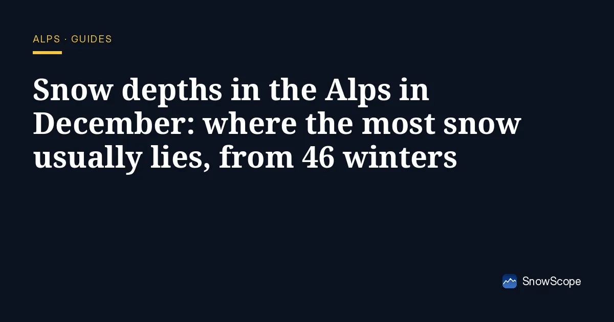
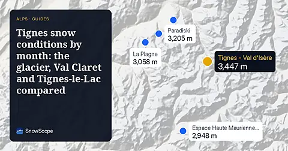

Snow depths in the Alps in December: where the most snow usually lies, from 46 winters
December is the month when people ask which Alpine resort actually has snow, and the honest answer is a ranking, not a name. We took twelve famous resorts across France, Switzerland, Austria and Italy and asked our snow history of 46 past winters one question: how much snow lies at mid-mountain and at the top in a usual December? The results separate the Alps into three groups.
See the live snow forecast for Alps in the SnowScope appSnow depth, powder alerts and the 3D map, free.
The high French group leads
The three deepest Decembers at mid-mountain are all in the French Alps: Val Thorens (France): 89 cm at mid-mountain (2473 m), 155 cm at the top (3221 m); Tignes – Val d'Isère (France): 80 cm at mid-mountain (2503 m), 161 cm at the top (3447 m); Les Deux Alpes (France): 77 cm at mid-mountain (2397 m), 169 cm at the top (3511 m). High villages and high mid-mountain points are the common thread; none of these three relies on the valley for its skiing.
The glacier and high-village group
Close behind: Saas-Fee (Switzerland): 68 cm at mid-mountain (2668 m), 158 cm at the top (3556 m); Alpe d'Huez (France): 62 cm at mid-mountain (2215 m), 158 cm at the top (3306 m); Sölden (Austria): 62 cm at mid-mountain (2295 m), 140 cm at the top (3245 m); St. Anton (Austria): 62 cm at mid-mountain (1962 m), 110 cm at the top (2642 m). The Swiss resorts carry less at mid-mountain than their summits suggest because their villages sit low in deep valleys; their tops are among the deepest in the Alps in every month.
The lower and eastern group
The rest: Zermatt (Switzerland): 54 cm at mid-mountain (2715 m), 137 cm at the top (3872 m); Verbier (Switzerland): 53 cm at mid-mountain (2103 m), 137 cm at the top (3301 m); Hintertux (Austria): 53 cm at mid-mountain (2372 m), 96 cm at the top (3245 m); Cortina d'Ampezzo (Italy): 30 cm at mid-mountain (1799 m), 72 cm at the top (2739 m); Kitzbühel (Austria): 23 cm at mid-mountain (1377 m), 45 cm at the top (1993 m). These are big, excellent ski areas whose natural December depth at mid-mountain is modest; their early-season skiing is on snowmaking and on their highest lifts.
The floor: a poor December
A ranking of usual Decembers hides the risk. The depth that nine of ten past Decembers reached at mid-mountain is the useful floor: Val Thorens 49 cm; Tignes – Val d'Isère 43 cm; Les Deux Alpes 40 cm; Saas-Fee 37 cm; Alpe d'Huez 31 cm; Sölden 33 cm. The high French resorts and Saas-Fee keep a real cover even in a poor December; most of the others do not.
Reading the ranking resort by resort
Val Thorens: 89 cm at mid-mountain, floor 49 cm, 155 cm at the top, 273 cm at the top in March, 21 safe weeks. Tignes – Val d'Isère: 80 cm at mid-mountain, floor 43 cm, 161 cm at the top, 263 cm at the top in March, 21 safe weeks. Les Deux Alpes: 77 cm at mid-mountain, floor 40 cm, 169 cm at the top, 334 cm at the top in March, 20 safe weeks. Saas-Fee: 68 cm at mid-mountain, floor 37 cm, 158 cm at the top, 255 cm at the top in March, 21 safe weeks. Alpe d'Huez: 62 cm at mid-mountain, floor 31 cm, 158 cm at the top, 318 cm at the top in March, 18 safe weeks. Sölden: 62 cm at mid-mountain, floor 33 cm, 140 cm at the top, 240 cm at the top in March, 17 safe weeks. St. Anton: 62 cm at mid-mountain, floor 31 cm, 110 cm at the top, 230 cm at the top in March, 17 safe weeks. Zermatt: 54 cm at mid-mountain, floor 28 cm, 137 cm at the top, 215 cm at the top in March, 18 safe weeks. Verbier: 53 cm at mid-mountain, floor 30 cm, 137 cm at the top, 235 cm at the top in March, 19 safe weeks. Hintertux: 53 cm at mid-mountain, floor 27 cm, 96 cm at the top, 169 cm at the top in March, 15 safe weeks. Cortina d'Ampezzo: 30 cm at mid-mountain, floor 7 cm, 72 cm at the top, 132 cm at the top in March, 0 safe weeks. Kitzbühel: 23 cm at mid-mountain, floor 6 cm, 45 cm at the top, 111 cm at the top in March, 0 safe weeks.
Two numbers per resort tell the December story: the usual mid-mountain depth, which is what the pistes above the village look like, and the top figure, which is what the highest lifts open on. A resort can be low in the first and high in the second; that is the glacier and high-ridge group, where December skiing is real but concentrated on the upper mountain.
How to use these numbers for a booking
Take the resort's usual December depth at mid-mountain and compare it with the nine-of-ten floor: a resort whose floor is close to its usual depth is a steady one, a resort with a wide gap swings from winter to winter. Then look at the weeks with real snow on the resort's own page, where the same 46 winters are shown week by week, and book the weeks that reach the line in nine winters of ten rather than the ones that only reach it in half.
These values are estimates of past winters for each area, not the resorts' own measurements, and they describe natural snow: the groomed pistes of a big resort are usually in better shape than the natural number alone suggests, especially in December when snowmaking has run for weeks.
If you can wait until March
March is the deepest month at the summits, and the gaps close: Val Thorens 273 cm; Tignes – Val d'Isère 263 cm; Les Deux Alpes 334 cm; Saas-Fee 255 cm; Alpe d'Huez 318 cm; Sölden 240 cm; St. Anton 230 cm; Zermatt 215 cm at the top in a usual March. The December ranking is about where to go now; the March numbers are why the whole range is worth a trip later.
Tips for skiers
- For a December week with natural snow at village height, choose the high French resorts or Saas-Fee.
- For the eastern Alps in December, ski the glaciers and the highest lifts; the mid-mountain depth is thin in a usual year.
- Our depths are an area estimate from past winters, not resort measurements; lift openings are on the official sites.
- Check the weeks with real snow on each resort's page before booking: nine-of-ten-winters weeks are the safe ones.
References and credits
- Wikipedia, 'List of ski areas and resorts in Europe', retrieved 22 November 2026: countries and locations of the twelve resorts. en.wikipedia.org/wiki/List_of_ski_areas_and_resorts_in_Europe
About these numbers
Snow numbers: SnowScope snow history, 46 past winters (1980-81 to 2025-26) at three heights of the resort (an estimate for an area, not resort reports). Lift, run and access facts: the sources listed below, checked on the date shown.
Cite this report
For research, teaching or the press: the numbers and charts are free to reuse under CC BY 4.0 with this citation.
SnowScope (2026), Snow depths in the Alps in December: where the most snow usually lies, from 46 winters, https://snowscope.app/blog/en/2026/11/schneehoehen-alpen-dezember-where-the-most-snow-lies-46-winters.html, accessed 2026-11-23
SnowScope (Atlas Labs). (2026, November 23). Snow depths in the Alps in December: where the most snow usually lies, from 46 winters. SnowScope snow reports. https://snowscope.app/blog/en/2026/11/schneehoehen-alpen-dezember-where-the-most-snow-lies-46-winters.html
BibTeX
@misc{snowscope2026schneehoehenalpendezembe,
author = {{SnowScope (Atlas Labs)}},
title = {Snow depths in the Alps in December: where the most snow usually lies, from 46 winters},
year = {2026},
month = nov,
howpublished = {\url{https://snowscope.app/blog/en/2026/11/schneehoehen-alpen-dezember-where-the-most-snow-lies-46-winters.html}},
note = {Published 2026-11-23 09:30 UTC; accessed 2026-11-23}
}· CC BY 4.0 · Methods, data and tools →
Follow Alps
Free: a message when fresh snow is coming, and the forecast every morning.
More snow reports

Fourteen days of new snow across the Alps from 22 November to 5 December: Les Deux Alpes gets about 94 cm, with 73% arriving in week one. Data from 21 November.

Tignes climbs from 1559 m to 3447 m across 46 past winters. Base: 117 cm peak. Mid-mountain: 216 cm. Glacier: 372 cm. Data from November 2026.

How snow depth changes month by month at three top Dolomites resorts across 46 past winters, from base to summit.